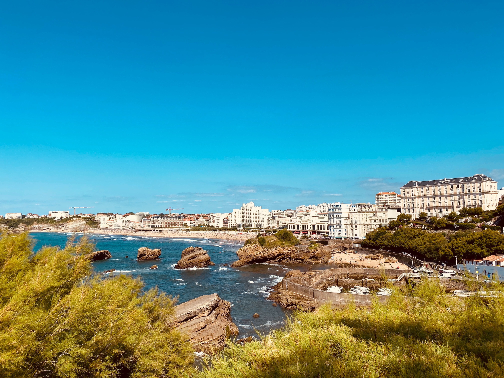
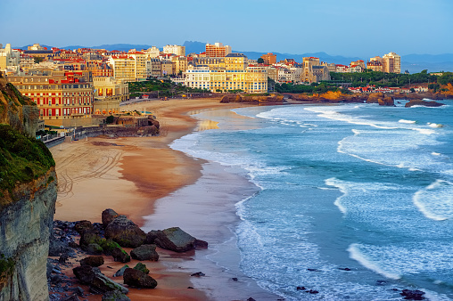
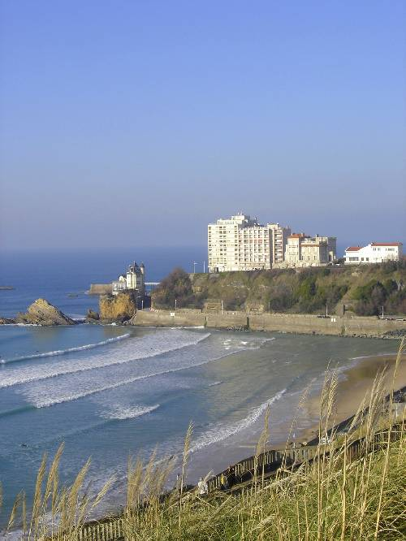
Au sud de Biarritz, la plage "côte des basques"
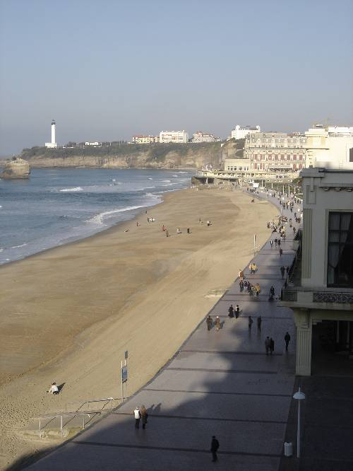
Vue du Casino, Grande Plage et centre ville, hors saison
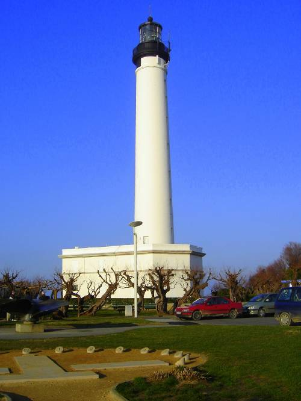
Phare de Biarritz
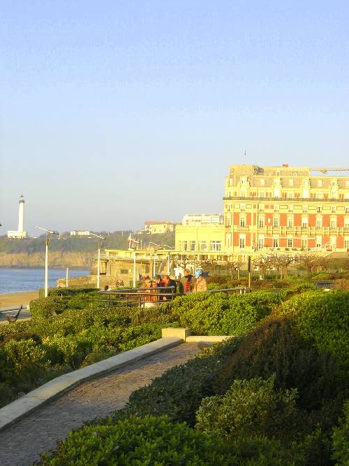
Grande plage, plage centrale, centre de Biarritz, hôtel du Palais à droite
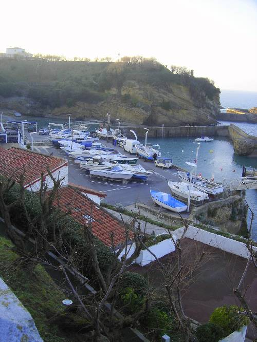
Port des pêcheurs, bâteaux en hivernage. Vue depuis l'église Sainte Eugénie
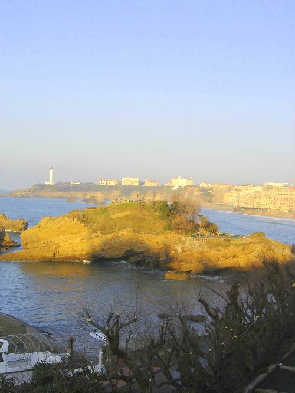
Port de pêcheurs. Centre ville sur la droite
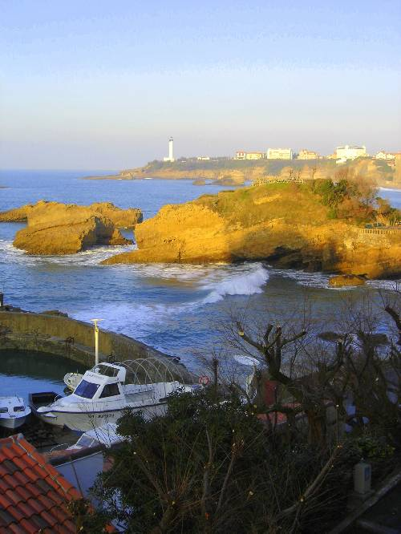
Port des pêcheurs et vue sur le phare de Biarritz
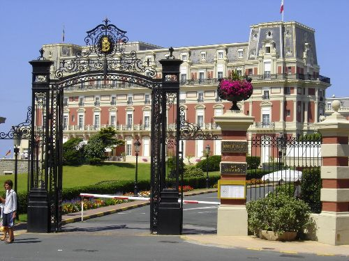
Hôtel du Palais
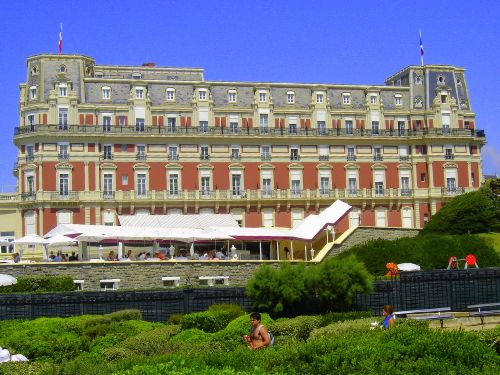
Hôtel du Palais
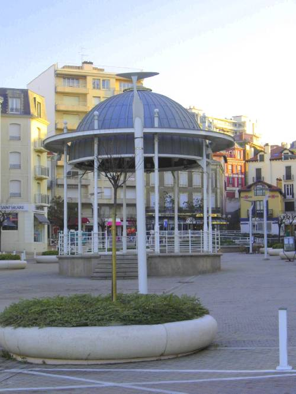
Place Sainte Eugénie
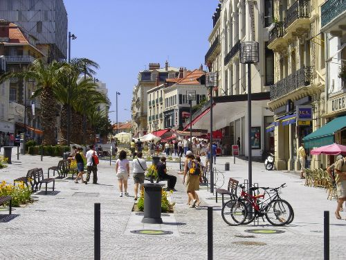
Centre ville
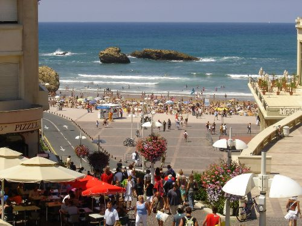
Centre ville, vue de la grande plage
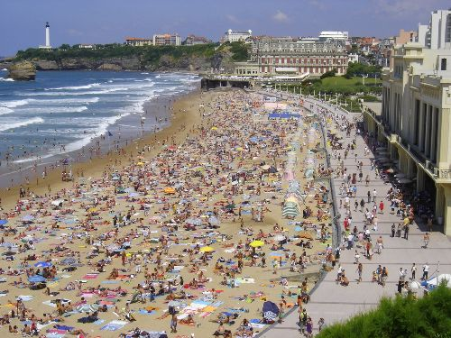
Grande plage, plage du centre
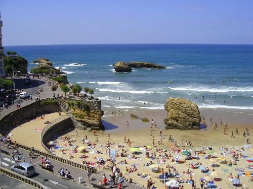
Grande plage, vue du centre ville
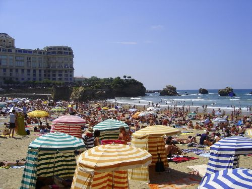
Grande plage
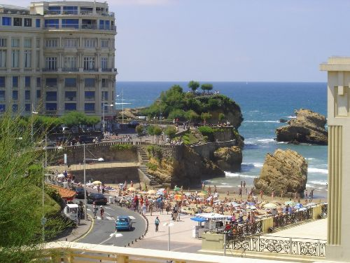
Autre vue de Biarritz